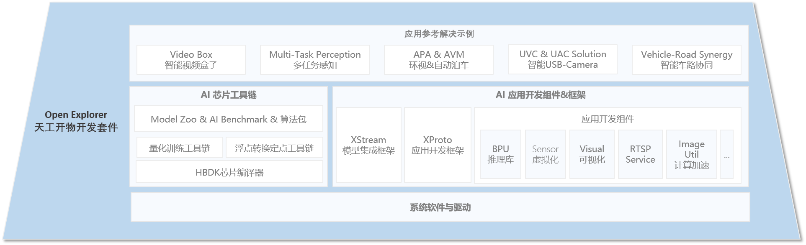
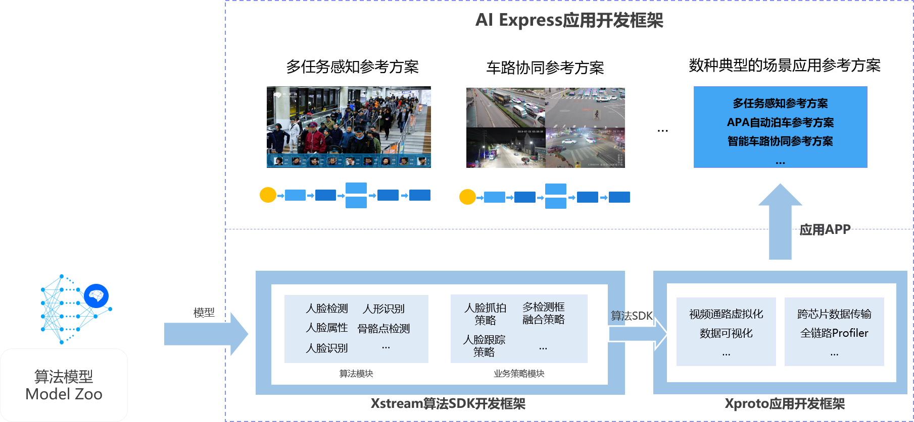

AI Express用户手册¶
1. 产品概述¶
AI Express，中文名称AI应用开发组件&框架，是地平线芯片“天工开物”（Horizon OpenExplorer™️ Platform）AI开发平台的一部分。
天工开物 AI 开发平台基于地平线AI芯片打造，由AI算法仓库(Model Zoo)、AI芯片工具链(AI ToolChain)及AI应用开发组件&框架(AI Express)三大功能模块构成，旨在通过全面降低开发者门槛、提升开发速度、保证开发质量，赋能产业智慧升级。
完整的Open Explore架构图如图所示：

其中 AI应用开发框架（AI Express）:包含XStream和XProto两套应用开发框架，并且内置丰富且高度可复用的算法模块、业务策略模块、应用组件，帮助合作伙伴快速搭建高性能的算法工作流。产品使用示意图如下所示：

1. XStream算法SDK开发框架 : 支持将算法模型，算法策略以Graph图的方式进行构建，极大的简化的算法模型工程化集成的复杂度，内置高性能的多线程调度框架，支持多粒度的线程控制。
2. XProto应用开发框架: 围绕X3芯片，提供丰富的应用开发组件（视频通路虚拟化，数据可视化等），支持用户快速完成AI应用的开发。
3. 场景参考解决方案: 沉淀了多任务感知参考解决，APA自动泊车参考解决方案，智能车路协同参考解决方案，智能盒子参考解决方案以及USB Camera参考解决方案。用户可以直接基于这些方案，快速完成自己的产品开发。
2. 开发组件文档¶
各个组件详细介绍请参考如下链接：
| 功能类别 | 软件模块 | 参考文档 |
|---|---|---|
| 基础组件 | XStream算法SDK开发框架 | ./xstream/README.md |
| XProto应用开发框架 | ./xproto/README.md | |
| Image Utils工具类基础组件 | ./image_utils/README.md | |
| Video Source视频通路虚拟化组件 | 即将发布 | |
| RTSP Service通用基础组件 | 即将发布 | |
| 参考解决方案 | 多任务感知参考解决方案 | multitask_perception_solution |
| 智能视频盒子参考解决方案 | video_box_solution | |
| USB Camera参考解决方案 | usb_camera_solution | |
| APA自动泊车参考解决方案 | 即将发布 | |
| 智能车路协同参考解决方案 | 即将发布 |
上述即将发布的内容将会在2021年4月-5月陆续通过地平线开发者社区( https://developer.horizon.ai/ )进行释放。
3. 开源仓库¶
AI Express大部分源码采用BSD开源许可证进行社区开源，您可以可以自由使用源码、修改源码用于自己私有产品开发。
开源仓库地址：https://github.com/HorizonRobotics-Platform/ai-express